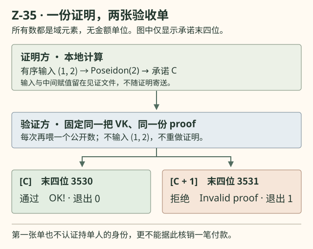

只能写前一句。 两个原数叫「原像」，公开登记的结果叫「承诺」。在电路和验证密钥可信的前提下，通过表示这是一份与该承诺相符的原像知识证明。验证时没查姓名，也没查领券记录；别人拿来同一份证明，结果不会因换了提交人而改变。这里只摘末四位方便阅读，不是只核四位。
保留同一把验证密钥和同一份证明，只把待验的完整数值加 1，末尾变成 3531。还能给新登记打勾吗？不能，验证结果应是「拒绝」：原证明不能替改过的数作证。这并不是说没人能找到产生新数的原像。
这是独立选修，到这里就可以收起工单；想换个问题再看，可选读第 36 课：工单交接后谁还能改它，两课互不为先修。以下选做离线实验。要区分「数值对得上」与「谁签了名」，可回看第 02 课；要理解为何另记「是否已领」，可回看第 14 课的状态转移。实验用现成的 Circom 电路和 snarkjs，不部署合约、不连接节点、不用钱包。输入来自公开测试向量，不是真实秘密。
验证方究竟要验哪句话？
先把需求写成一个能判真假的关系：对于指定的 C，存在两个有序域元素 x, y，使得 Poseidon(x, y) = C，而证明的生成者知道这样一组输入。 这里的 Poseidon 特指 circomlib 2.0.5 的 Poseidon(2)，即初始状态为零、输入两项、输出一项的那套参数。(1, 2) 是两个域元素，不是 UTF-8 文本 "12"，也不是把两个 Java long 的字节拼起来再做 SHA-256。这里把登记的哈希值简称为「承诺」；这个称呼本身不保证隐藏性。
可把验证接口想成 verify(固定的验证密钥, 登记台要验的公有信号, 交来的证明)。密钥决定验哪套电路与设置；公有信号决定验哪个实例；证明交由密码库检验。不能让证明方替登记台选题。 如果对方随便挑一对数，算出自己的 C，再把这个 C 连同证明一起交来，数学验证也可以通过。业务端还必须用自己事先保存的完整承诺来验，或先查明提交的公有信号与该记录完全一致。本课的独立对照物是库作者发布的已知答案，不是证明脚本自己算出的另一个「预期值」。


从一道约束读懂「见证」
库中自带的入口电路只有三句有效代码；实验复制并编译这一原件和它引用的两个源文件，不另写哈希函数：
pragma circom 2.0.0;
include "../../circuits/poseidon.circom";
component main = Poseidon(2);
第一句声明 Circom 语法版本；第二句引入库；第三句把两个输入的模板设为主组件。文件名里的 3 是内部状态宽度（三个域元素），不是让你再交一个输入。主组件的 inputs[0]、inputs[1] 没被声明为公开输入，因此是私有输入；主组件的输出 out 按 Circom 规则总是公开。于是编译统计会显示 2 个 private inputs、0 个 public inputs、1 个 output，而交给 snarkjs 验证器的 public.json 却有 1 项。不矛盾：从电路看是输出，从验证器接口看它是公有信号，也就是调用方的输入。
验证的不是「某段 JS 顺利返回」；验证的是一组算术等式能同时成立。看库中 Sigma 的三行即可，不必手推整个哈希：in2 <== in * in、in4 <== in2 * in2、out <== in4 * in。例如单看这个部件，若线上的值是 2，就须分别填 4、16、32；最后填 33 即使是合法数字，也不能满足最后一条等式。<== 既计算赋值，又把等式加入约束。编译器把关系表示为 R1CS（秩一约束系统）；一份完整的见证是使约束成立的赋值，包含私有输入、公开值以及编译后需要的中间值。.wtns 因此不是一张可公开的证明。.wasm 负责算赋值；groth16 prove 读见证与证明密钥才产生可交接的 proof.json。
这些等式做的是模素数 p 的算术。本实验默认 BN254 标量域的模数是 21888242871839275222246405745257275088548364400416034343698204186575808495617。域中 (p−1)+1 = 0；x 和整数 x+p 不是两个不同的域元素。电路没有验证 x 是合法的手机号、正金额或不超过 Long.MAX_VALUE。应用如需这些条件，要有相应的编码、范围约束和数据来源，不能从哈希等式倒推。交接文件以规范十进制字符串写 [0,p) 的值；Java 可用 BigInteger 读取并检查上下界，不用 double，脚本给 C 加一也用 BigInt。
先搭一次本地验证台，再开两张单
工具基线：Bash、Node.js 24 LTS（可用 24.22.0）、npm 11（可用 11.19.1）。依赖表和锁文件固定 circomlib 2.0.5、snarkjs 0.7.6、circom2 0.2.23 及传递依赖。最后一个包是第三方封装的 Circom 2.2.3 WASM 编译器，不是官方原生二进制；实验不要求 Rust、Docker 或全球安装的 circom。首次安装须能从 npm registry 获取锁定的软件包。所有命令在仓库根目录、同一个 Bash 会话执行：
export ZK35_TOOLS="${XDG_CACHE_HOME:-$HOME/.cache}/web3-study/m09-preimage"
bash labs/m09/preimage/prepare.sh
# 安装目录如上，下载包缓存见 npm config get cache；缓存齐全才可用 prepare.sh --offline。
WORK=$(mktemp -d)
printf '本轮工作目录：%s\n' "$WORK"
bash labs/m09/preimage/setup.sh "$WORK/keys"
bash labs/m09/preimage/prove.sh "$WORK/keys" A "$WORK/A"
prepare.sh 把两份 npm 清单放进专用缓存，执行 npm ci --ignore-scripts，不写全局工具。setup.sh 只接收一个尚不存在的目录。它按下述顺序运行；备妥依赖后，设置、证明和验证都无需联网：
| 工序 | 读入 → 写出 | 你要核对什么 |
|---|---|---|
| 编译 | 库内 poseidon3_test.circom → .r1cs 与见证计算器 .wasm |
keys/circuit-info.log 的私有输入、公有输入与输出数量；不是合约字节码 |
| 第一阶段 | powersoftau new bn128 10、本机一次 contribute、prepare phase2 → prepared.ptau |
10 是容量指数（2 的 10 次方），不是业务字段；ptau-check.log 来自工具对文件的验证 |
| 第二阶段 | 该电路的 R1CS 和 prepared.ptau → 初始 zkey；本机再贡献 → proving.zkey |
key-check.log 记录 zkey verify；不能拿零次贡献的初始文件当成正式参数 |
| 导出 | 从本轮 proving.zkey 导出 verification_key.json（VK） |
验证方应从自己信任的发布渠道固定 VK；不是证明方发来哪把就用哪把 |
为什么在一台电脑上跑两阶段，还叫「不可信设置」？ Groth16 的可靠性依赖生成参数时的秘密没有被保留、相应的贡献和电路绑定可核验。第一阶段与容量及曲线有关，第二阶段绑定具体电路；改电路不能沿用旧的一套密钥。实际仪式把贡献分给独立参与方，各相关阶段需要有诚实贡献者安全销毁自己的秘密。文件校验能检查代数关系，不能证明操作者销毁过秘密，也不能排除恶意工具或编译错了电路。本例同一人、同一机完成全部步骤，-e=teaching-only 是公开的教学参数，不为仪式提供独立信任。可以演练流程，不能把这套本地密钥用来发放有价值的权益。 proving.zkey 是证明材料，不是用户私钥或见证；无需让验证方持有它。
A 单：别把「拒绝」测成 JSON 语法错误
prove.sh 的 A 单把 {"inputs":["1","2"]} 写进临时目录。wtns calculate 生成见证；wtns check 对同一电路本地核对；groth16 prove 一次生成 A/proof.json 与 A/public.json。脚本要求公开数组只有一项，且等于上游测试向量的 A 答案：
C = 7853200120776062878684798364095072458815029376092732009249414926327459813530
C+1 = 7853200120776062878684798364095072458815029376092732009249414926327459813531
第二个数没越过 p，仍是一个合法域元素。脚本把它放入另一份合法的单项数组 A/changed.json；没有改曲线、VK、证明文件、数组长度或序列化类型。你可以扮演接手方，在另一进程中只读公开文件再验，不接触证明端的输入和见证：
S="$ZK35_TOOLS/node_modules/.bin/snarkjs"
VK="$WORK/keys/verification_key.json"
P="$WORK/A/proof.json"
"$S" groth16 verify "$VK" "$WORK/A/public.json" "$P"
rc=0
"$S" groth16 verify "$VK" "$WORK/A/changed.json" "$P" || rc=$?
printf '改承诺后的退出状态 = %s\n' "$rc"
cat "$WORK/A/receipt.txt"
读这两次命令时，对齐三个文件位置：验证密钥 "$VK" 和证明 "$P" 始终没换，只把中间的 public.json 换成 changed.json。先看诊断再看退出码：第一行应为 OK!（0）；第二次应为 Invalid proof（1）。两个公开数都合法，说明第二次不是「文件读不出来」，而是验证等式用上了新的公有信号，同一证明不再满足。它拒绝的是这份证明与这个数的组合，不判断新数是否有别的证明。
若是找不到文件、JSON 解析错误或进程中断，同样可能非零退出，不能算这道负例做对。脚本只在拒绝原因和退出码都对时签收；此时脚本自身退出 0，说的是「对照做成了」，不是「第二张单通过」。
交件白名单： A/public.json、A/changed.json、A/proof.json、A/accept.log、A/reject.log、A/receipt.txt。另由设置方提供本轮 VK。receipt.txt 记录同一 VK、同一 proof 文件的 SHA-256 以及两次判断；这两个文件摘要是交接用的字节指纹，不是 Poseidon 承诺，也不是发布者签名。接手人可以移走整份 keys/，只留下从可信处取得的 VK 副本仍能验。不要打包工作目录、.wtns 或私有输入。脚本退出时删除临时见证，不承诺介质上的安全擦除。重新设置会产生另一套材料；重新证明也使用随机性。请比较结论与公开承诺，不要把某次的证明字节当作黄金快照。
只接手验证，不做设置： 仓库已收录一轮的验证密钥、A 的证明、原承诺和加一后的承诺。备好上面的 npm 工具，在仓库根目录执行：
D=labs/m09/evidence/preimage
S="$ZK35_TOOLS/node_modules/.bin/snarkjs"
"$S" groth16 verify "$D/verification_key.json" "$D/A/public.json" "$D/A/proof.json"
rc=0; "$S" groth16 verify "$D/verification_key.json" "$D/A/changed.json" "$D/A/proof.json" || rc=$?
test "$rc" = 1
这套公开材料不含见证。不要拿自己新跑 setup.sh 得到的 VK 来验这份旧证明。
公开了什么，能拿来批准什么？
- 仍然公开：验证的关系、验证密钥、承诺
C和证明本身。若同一承诺出现在两次请求，观察者可以把它们关联；若通过 API 或链提交，还有时间、网络或交易发送方等电路外的线索。本实验没有模拟这些外部身份，也没有链上记录。 - 没有直接交付不等于不可推断。 零知识针对的是证明相对于公有陈述不额外披露见证，不会增强公有陈述自身的保密性。若两项都来自
0..9，有序候选总共10 × 10 = 100对，确定性哈希可以逐一比对，不需要破解证明。这里上游甚至直接刊出了两对测试输入。真实业务若需要不可猜测性，应评估高熵秘密与承诺方案，不能把手机号、短信码或小额金额直接当作安全秘密。 - 不是身份，也不是一次性授权。 拿到证明副本的人可以原样提交；
verify仍回答「这份证明与这条陈述相符」，不回答「当前请求者就是原证明者」。电路没有验证发行人签名、名单成员资格、时效或支付状态，也没有记录「已用」。若产品要求某人一次领取，要另行定义身份或持有条件、场景绑定与防重复核销的状态转移，再评估满足那些要求的协议；本例不能充当登录或支付接口。
独立作业：两张正确单能否互换附件？
登记员保留 A 单，再建 B 单：B 对应库作者的另一组 (3,4)。不要再跑 setup.sh；在同一把 VK 下生成 B 的证据。把 B 的证明交给另一位接手人，不给任何 .wtns。在一张交接表上填 三行：B 承诺＋B 证明、B 承诺＋A 证明、A 承诺＋B 证明。记录各次的 VK 和 proof 字节摘要、公有信号的完整值、退出状态及 CLI 的原话。两次交叉验证只换指定附件，不临时生成新证明。
bash labs/m09/preimage/prove.sh "$WORK/keys" B "$WORK/B"
# S、VK 的定义见上；先验证 B 原件，再自行替换下列其中一条输入路径。
"$S" groth16 verify "$VK" "$WORK/B/public.json" "$WORK/B/proof.json"
过关线： B 的公开数应为 14763215145315200506921711489642608356394854266165572616578112107564877678998；B 原件通过，两次交叉提交都报 Invalid proof，不能用 B 的证明签收 A 工单。另用同一个 B 证明和 B 承诺重放一次，说明为何密码验证仍通过，却不能据此重复发券。把白名单证据与交接表放在一起；若不小心换了 VK、只比较末四位，或把数字相等写成「已验证真实身份」，不能签收。
对照原件
- Circom：信号与可见性、域元素与算术：分别核对主组件输出、公私输入与模数。
- circomlib：本课实际调用的 Poseidon 电路、WASM 编译器封装的版本说明：辨认模板和编译器来源。
- snarkjs 0.7.6：两阶段设置与证明命令、Groth16 验证器源码、Groth 的原论文：核对公有信号进入验证的方式、返回条件和安全假设。